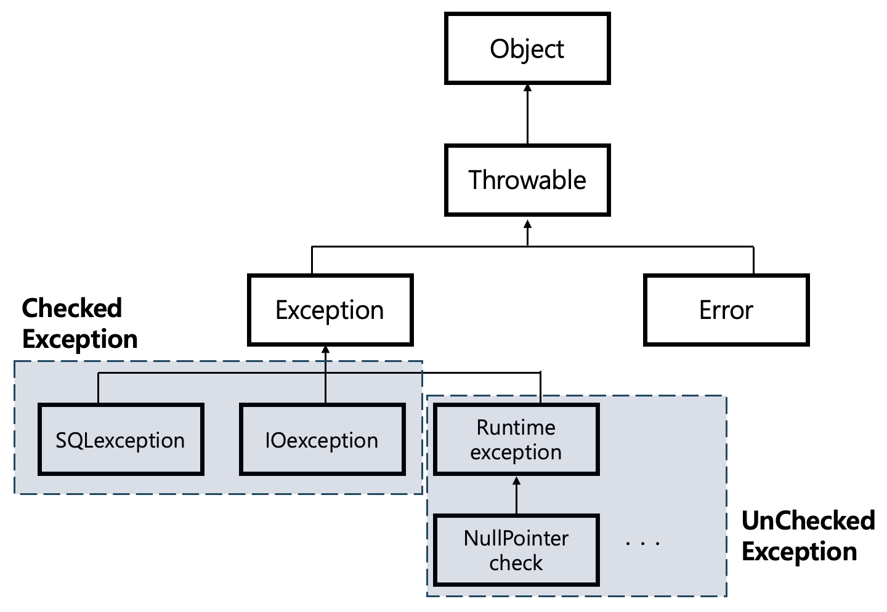

"Exception 예외" 란, 프로그램이 예기치 못한 상황으로 인해 발생하는 현상으로 배열의 범위에서 벗어 났을때 발생하는 IndexOutOfBoundsException, 런타임에 발생하는 RuntimeError 등 다양한 예외 상황이 존재한다.
Java 언어는 이러한 다양한 예외를 처리하기 위한 문법을 제공한다.
예외를 처리하기 위해서는 두 가지 규칙만 생각하면 된다. "1. 예외를 잡거나" "2. 예외를 외부로 던지거나"
이번 포스팅 에서는 예외를 잡는 방법에 대해서 정리해 보고자 한다.
#1 예외 계층
#2 Catch Exception
#2.1 try ~ catch
#2.2 try ~ catch ~fianlly
#3 사용자 정의 예외
#3.1 커스텀 체크 예외
#3.2 커스텀 언체크 예외
*개인적인 공부 내용을 기록하는 용도로 작성한 글 이기에 잘못된 내용을 포함하고 있을 수 있습니다.
#1 예외 계층
예외 또한 객체이다. 즉, 결국 하나의 클래스와 다를게 없다는 것이다.
예외는 모든 객체의 부모 객체인 Object 객체를 상속받은 Throwable 객체에서 관리된다.
또한 어떠한 객체를 상속 받는 지에 따라서 다음과 같이 구분한다.
체크 예외 Checked Exception : Exception 객체를 상속받는 예외로 주로 컴파일 타임에서 발생하는 예외들을 관리한다. 체크 예외는 프로그래머가 반드시 오류를 잡아서 처리해 주어야 한다.
언체크 예외 UnChecked Exception : Runtime Exception 객체를 상속받는 예외로 주로 런타임에 발생하는 예외들을 관리한다. 언체크 예외는 프로그래가 별도로 오류를 잡아주지 않아도 된다.

#2 Catch Exception
먼저 오류를 잡는 방법에 대해서 정리해 보고자 한다.
간단한 예제를 통해 예외가 발생하는 상황을 처리하는 방법에 대해서 알아보자. 다음 코드는 크기가 5인 배열 array에 6번째 인덱스에 접근을 시도하기에, 배열의 범위를 벗어 났다는 IndexOutOfBoundsException 에러가 발생한다.
public class ErrorMain {
static int array[] = {1, 2, 3, 4, 5};
public static void main(String[] args) {
int access = array[6]; // IndexOutOfBoundsException Error
}
}Exception in thread "main" java.lang.ArrayIndexOutOfBoundsException: Index 6 out of bounds for length 5
at exception.ErrorMain.main(ErrorMain.java:6)
이처럼 오류를 잡아주지 않으면 오류가 메인 함수 밖으로 나가 프로그램이 종료 되어 버리고 만다.
#2.1 try ~ catch
자바에서 제공하는 try ~ catch 문을 사용하면 발생하는 오류를 잡을 수 있다.
try 블럭 내부에는 코드가 실행되는 정상 로직을 catch 블럭 내부에는 예외 흐름을 기입한다.
public class ErrorMain {
static int array[] = {1, 2, 3, 4, 5};
public static void main(String[] args) {
try {
int access = array[6];
} catch (IndexOutOfBoundsException e) {
System.out.println(e.getMessage());
}
}
}Index 6 out of bounds for length 5
⭐️ 예외 객체 e
객체 e 는 오류에 관한 정보를 포함하고 있다. 자주 사용되는 메서드는 다음과 같다.
| e.getMessage() | 오류가 발생한 원인 메시지를 출력한다. |
| e.printStackTrace() | 오류가 발생한 스택 트레이스를 출력한다. 주로 디버깅 시 유용하게 활용된다. |
| e.toString() | 오류에 대한 설명과 클래스를 문자열 형태로 반환한다. |
#2.2 try ~ catch ~ finally
try ~ catch 문법은 try 로직 흐름에서 예외가 발생하면 발생한 코드 흐름에서 바로 catch 문법으로 넘어가 오류를 잡은 뒤 블록에서 벗어나 버린다.
public class ErrorMain {
static int array[] = {1, 2, 3, 4, 5};
public static void main(String[] args) {
try {
int access = array[6];
System.out.println("array[1] = " + array[1]); // 해당 로직은 실행되지 않음.
} catch (IndexOutOfBoundsException e) {
System.out.println(e.getMessage());
}
}
}
만약 예외 상황에 관계 없이 반드시 실행 되어야 하는 로직 (서버 자원을 해제하는 등..) 이 존재한다면 finally 부분에 실행을 보장한 코드를 작성해 주면 된다.
public class ErrorMain {
static int array[] = {1, 2, 3, 4, 5};
public static void main(String[] args) {
try {
int access = array[6];
} catch (IndexOutOfBoundsException e) {
System.out.println(e.getMessage());
} finally {
System.out.println("array[1] = " + array[1]); // 해당 로직은 항상 실행을 보장
}
}
}Index 6 out of bounds for length 5
array[1] = 2#3 사용자 정의 예외
예외의 상속 구조를 잘 숙지하면 커스텀 예외를 만드는 것은 어렵지 않다.
예외 또한 클래스로 관리되기에 SQLexception이 발생하면 Exception 부모 객체를 상속받은 SQLexception 클래스가 초기화되고,
NullPointerCheck 예외가 발생하면 Runtime exception 예외를 상속받은 NullPointerCheck 클래스가 초기화 되는 것 뿐이다.
예외는 throw 문법을 사용하여 발생시키며, 예외를 던지는 방법에 대해서는 다른 포스팅에 별도로 작성할 예정이다.
#3.1 커스텀 체크 예외 예제
다음 코드는 Exception 클래스를 상속받은 MyChekcedException 체크 예외를 생성한 뒤, 메인 함수에서 실행한 예제이다.
public class MyCheckedException extends Exception {
// 부모 클래스 Exception 의 생성자를 호출하여, 에러 메시지 저장
public MyCheckedException(String message) {
super(message);
}
}public class ErrorMain {
public static void main(String[] args) {
try {
throw new MyCheckedException("checked Exception"); // 에러 발생
} catch (Exception e) {
System.out.println("error message - " + e.getMessage());
}
}
}[output]
error message - checked Exception
체크 예외는 프로그래머가 반드시 예외를 잡아 주어야 하기에, try 블록 내부에 예외 발생 코드를 작성해 주지 않으면, 컴파일이 되지 않는다.
public class ErrorMain {
public static void main(String[] args) {
throw new MyCheckedException("checked Exception"); // 컴파일 에러
}
}java: unreported exception exception.basic.checked.MyCheckedException; must be caught or declared to be thrown
#3.2 커스텀 언체크 예외 예제
언체크 예외 또한 앞 코드에서 부모 예외 클래스가 Exception에서 RuntimeException으로 바뀌었다는 것 빼고는 동일하다.
/**
* RuntimeException을 상속받은 예외는 언체크 예외가 된다.
*/
public class MyUncheckedException extends RuntimeException{
public MyUncheckedException(String message) {
super(message);
}
}public class ErrorMain {
public static void main(String[] args) {
try {
throw new MyUncheckedException("UnChecked Exception"); // 에러 발생
} catch (Exception e) {
System.out.println("error message - " + e.getMessage());
}
}
}error message - UnChecked Exception
언체크 예외는 프로그래머가 별도로 try ~ catch 문법으로 예외를 잡아 주지 않아도 정상적으로 컴파일 된다.
하지만 이 경우 예외가 main 함수 밖으로 나가게 되어 프로그램이 종료된다.
public class ErrorMain {
public static void main(String[] args) {
/**
* 에러를 잡아주지 않아도 컴파일러에서 오류를 발생 시키지 않음.
*/
throw new MyUncheckedException("UnChecked Exception");
}
}Exception in thread "main" exception.basic.unchecked.MyUncheckedException: UnChecked Exception
at exception.basic.unchecked.ErrorMain.main(ErrorMain.java:10)